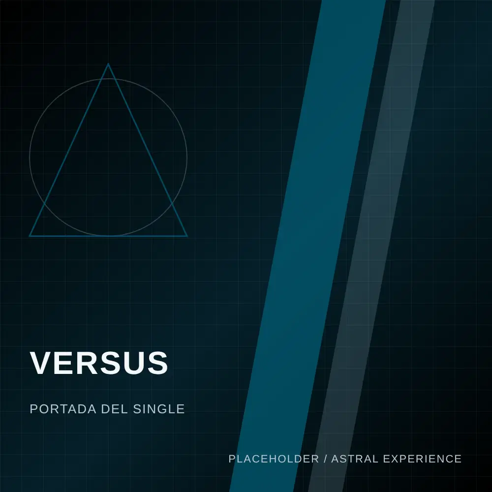
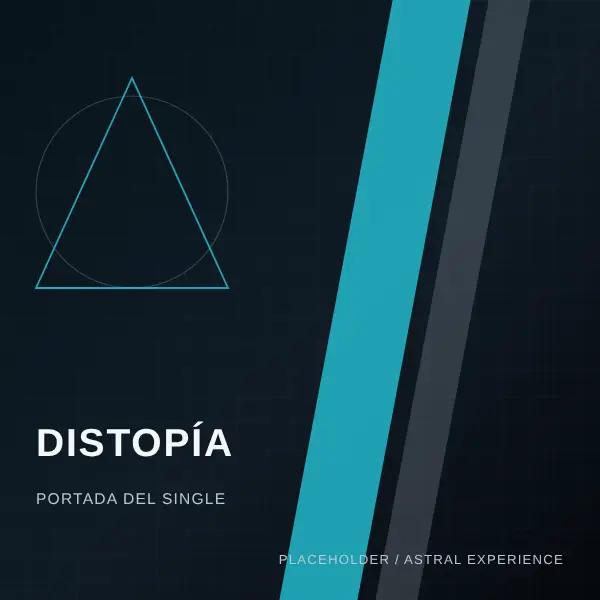
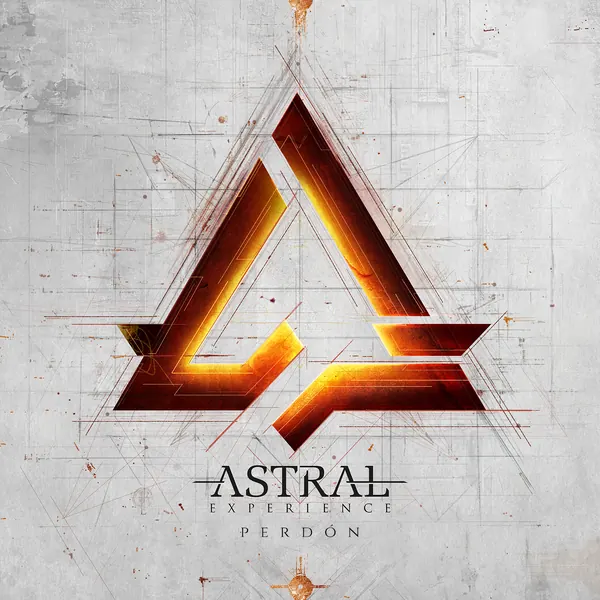
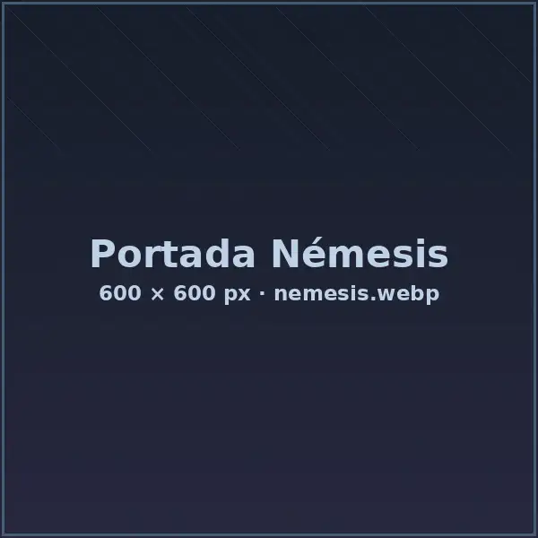
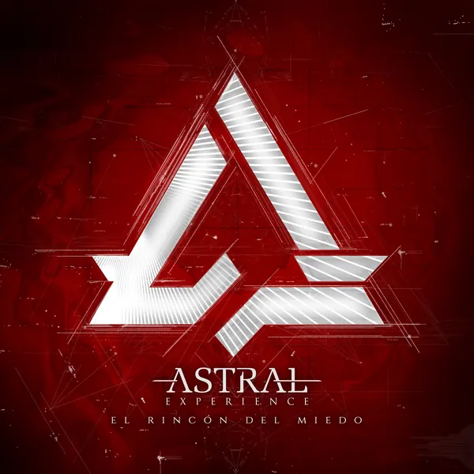
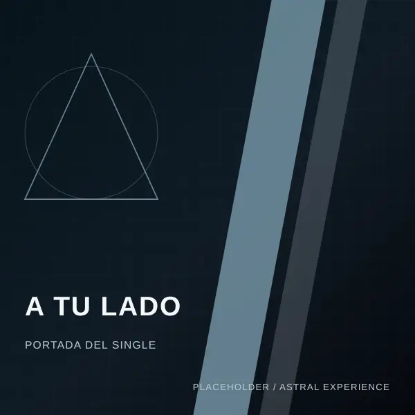
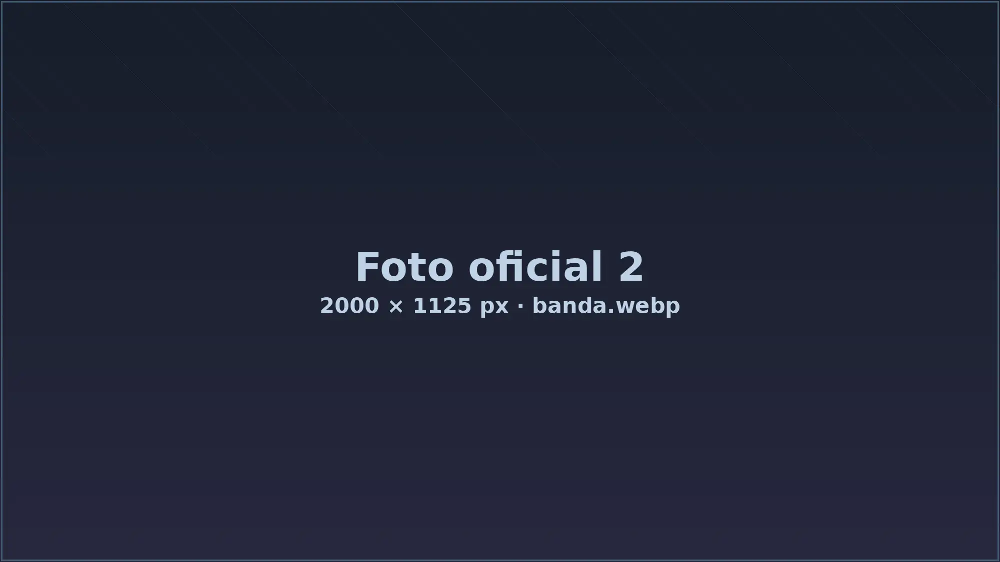

ÚLTIMO LANZAMIENTO
VERSUS
La contradicción de reconocer el daño que haces y seguir siendo quien eres. Una batalla contra la verdad que uno mismo intenta esquivar.
EL SONIDO
Desde Valencia construimos un sonido donde la combinación de dos voces con rangos muy dispares convive con guitarras técnicas, una base sólida y una producción orientada al metal moderno.
02 / MÚSICA

ÚLTIMO LANZAMIENTO
La contradicción de reconocer el daño que haces y seguir siendo quien eres. Una batalla contra la verdad que uno mismo intenta esquivar.





ESCUCHA AHORA / SPOTIFY
03 / EN DIRECTO
TOUR '25–'26: 13 CONCIERTOS. MÁS FECHAS PRÓXIMAMENTE.

04 / LA BANDA
Astral Experience es una banda de modern metal de Valencia que combina djent, metalcore y prog metal con una identidad basada en la combinación de dos voces con rangos muy dispares y una instrumentación técnica.
Aquí conviven riffs precisos, melodías y la intensidad que llevamos al directo: canciones pensadas para sonar igual de fuertes en estudio y sobre el escenario.
05 / AUDIOVISUAL